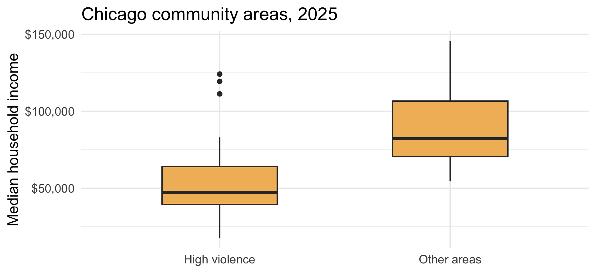

# A tibble: 4 × 3
fin arrest n
<chr> <dbl> <int>
1 no 0 150
2 no 1 66
3 yes 0 168
4 yes 1 48CRJU 705 · Session 7 · Fall 2026
Topic: no new statistics. Tonight we use what you already have.
count(), prop.test(), bayes_prop_test(), t.test()Learning goal: given a two-group question on a dataset you have never seen, pick the test, run it, and say what it means (and what it does not).
Lecture
Four worked examples, one recipe
Lab 7
Two more, and you write the code
What’s out there
A menu of real datasets to explore this week
Everything I run tonight is written up in the demo walkthrough.
Every question tonight, the same four steps:
count() for yes/no; group averages for a number| The outcome is… | Example | Test |
|---|---|---|
| yes/no | arrested again? searched? released? | prop.test() and bayes_prop_test() |
| a number | age, income, number of prior arrests | t.test(outcome ~ group, data = ) |
That table covers every question in tonight’s lecture and lab, and a surprising share of what gets published in criminal justice journals.
Question: did the aid group get re-arrested less often? Two groups, yes/no outcome: prop.test() and bayes_prop_test().
# A tibble: 4 × 3
fin arrest n
<chr> <dbl> <int>
1 no 0 150
2 no 1 66
3 yes 0 168
4 yes 1 48fin = yes): 48 re-arrested out of 48 + 168 = 216 (22.2%)Aid first all the way through, so every difference reads Aid minus No aid.
prop.test()
2-sample test for equality of proportions with continuity correction
data: c(48, 66) out of c(216, 216)
X-squared = 3.4439, df = 1, p-value = 0.06349
alternative hypothesis: two.sided
95 percent confidence interval:
-0.170713151 0.004046484
sample estimates:
prop 1 prop 2
0.2222222 0.3055556 A funder reading only the p-value writes “no significant effect” and cuts the program. Sound familiar? It is Session 6’s recidivism trial, except this one is real.
bayes_prop_test()
Bayesian test of two proportions
data, group 1: 48 of 216 (22.2%)
data, group 2: 66 of 216 (30.6%)
prior: know-nothing (1 yes, 1 no), same for both groups
estimate 95% credible interval
group 1 22.5% 17.2% to 28.2%
group 2 30.7% 24.8% to 37.0%
difference (1 minus 2) -8.2 points -16.5 to 0.0 points
Probability group 1 is higher than group 2: 0.03
Probability group 1 is lower than group 2: 0.97 “Not significant” is not “no effect.” Here the best estimate is an 8-point drop, and the data say it is very probably real.
The aid was handed out at random, so the two groups should look alike before release. We can check, with a number: prior convictions.
Welch Two Sample t-test
data: prio by fin
t = -0.016594, df = 429.91, p-value = 0.9868
alternative hypothesis: true difference in means between group yes and group no is not equal to 0
95 percent confidence interval:
-0.5529994 0.5437402
sample estimates:
mean in group yes mean in group no
2.981481 2.986111 This is the rare test where you hope for a big p-value. Random assignment is what lets a difference mean “caused.” None of tonight’s other three examples has it.
# A tibble: 4 × 3
employed released n
<chr> <chr> <int>
1 No No 349
2 No Yes 766
3 Yes No 543
4 Yes Yes 3568
2-sample test for equality of proportions with continuity correction
data: c(3568, 766) out of c(4111, 1115)
X-squared = 201.54, df = 1, p-value < 2.2e-16
alternative hypothesis: two.sided
95 percent confidence interval:
0.1512300 0.2106097
sample estimates:
prop 1 prop 2
0.8679153 0.6869955 bayes_prop_test() gives the same range (15.2 to 21.0 points) and more than a 99% probability the employed rate is higher. With 5,000 cases, the two traditions agreeSo a job gets you released? Not so fast. What else is different about these two groups?
checks counts how many police databases (prior arrests, convictions, parole, and so on) had the person’s name in them.
# A tibble: 2 × 3
employed avg_checks people
<chr> <dbl> <int>
1 Yes 1.44 4111
2 No 2.35 1115People without a job had more of a record, and a record is a reason to hold someone. The 18-point gap could be partly about records, not jobs.
Keep only people with no record at all (checks == 0), and ask again:
# A tibble: 4 × 3
employed released n
<chr> <chr> <int>
1 No No 35
2 No Yes 166
3 Yes No 124
4 Yes Yes 1526
2-sample test for equality of proportions with continuity correction
data: c(1526, 166) out of c(1650, 201)
X-squared = 21.112, df = 1, p-value = 4.333e-06
alternative hypothesis: two.sided
95 percent confidence interval:
0.04224058 0.15571509
sample estimates:
prop 1 prop 2
0.9248485 0.8258706 filter() is the simplest honest move you have: make the groups more alike, then ask again.
The outcome is a number, so: t.test().

Welch Two Sample t-test
data: median_income by violence
t = -6.3561, df = 74.959, p-value = 1.458e-08
alternative hypothesis: true difference in means between group High violence and group Other areas is not equal to 0
95 percent confidence interval:
-46932.44 -24533.58
sample estimates:
mean in group High violence mean in group Other areas
54354.63 90087.64 body_camera is TRUE when news or police reports said a body camera recorded the incidentQuestion: after 2020’s wave of police reform, did body camera footage exist more often? Group: 2015 to 2019 vs 2020 to 2024. Yes/no outcome.
# A tibble: 4 × 3
period body_camera n
<chr> <lgl> <int>
1 2015 to 2019 FALSE 4329
2 2015 to 2019 TRUE 594
3 2020 to 2024 FALSE 4302
4 2020 to 2024 TRUE 1205
Bayesian test of two proportions
data, group 1: 1,205 of 5,507 (21.9%)
data, group 2: 594 of 4,923 (12.1%)
prior: know-nothing (1 yes, 1 no), same for both groups
estimate 95% credible interval
group 1 21.9% 20.8% to 23.0%
group 2 12.1% 11.2% to 13.0%
difference (1 minus 2) 9.8 points 8.4 to 11.2 points
Probability group 1 is higher than group 2: more than 0.99
Probability group 1 is lower than group 2: less than 0.01 prop.test(): about 8 to 11 points higher, p below 2.2e-16. Bayesian: 8.4 to 11.2 points, more than 0.99With 10,430 cases, the p-value was never in doubt. The size is the whole story.
| Question | Test | Answer | The lesson | |
|---|---|---|---|---|
| Reentry | Does aid lower re-arrest? | prop.test() + Bayes |
22% vs 31%; p = 0.063; 97% probably lower | “Not significant” is not “no effect.” Randomization lets us say “caused” |
| Pretrial | Does a job get you released? | prop.test(), then again after filter() |
18 points; 10 among clean records | Groups differ in other ways. Compare like with like |
| Neighborhoods | Lower income where violence is high? | t.test() |
$25k to $47k lower | Size in real units. Areas are not people |
| Use of force | More body camera footage after 2020? | prop.test() + Bayes |
12% to 22% | Huge n: the p-value adds nothing; the size is the story |
Two more real questions, same recipe, and this time you write the code (lab page):
t.test() on the Post dataSubmit your Your Turn script to Canvas before you leave.
The Final-Project Data Options page lists real criminal justice datasets that load with one line of R:
Our course copy, the way you have loaded everything all semester:
The original, from an R package (install once, then load it each time):
Same data either way. Use whichever you like.
glimpse() tells you names and typesNA: summary() finds themCRJU 705 · Session 7